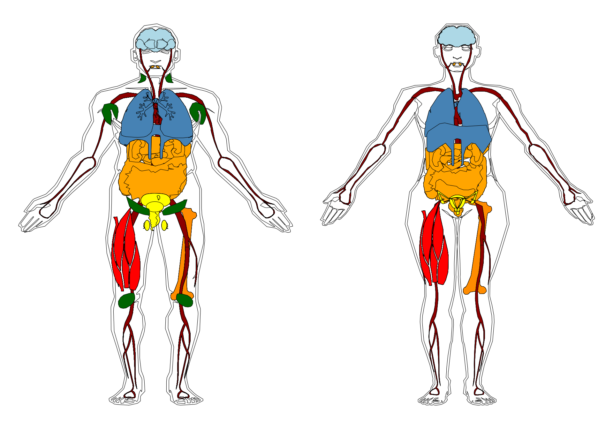

source(snakemake@input$config)
# READ ANNOTATION
# sa <- fread('/s/project/mitoMultiOmics/multiOMICs_integration/raw_data/proteomics_annotation.tsv')
sa <- fread(snakemake@input$sa)
sa <- sa[USE_FOR_PROTEOMICS_PAPER == T]
# Load patient's HPO
pat_hpo <- fread(snakemake@input$patient_hpo)
# pat_hpo <- fread('/s/project/mitoMultiOmics/multiOMICs_integration/raw_data/Patient_HPO_phenotypes.tsv')
pat_hpo <- pat_hpo[, c("SAMPLE_ID", "HPO_ID")]
# load HPO ontology
hpo <- get_ontology("http://purl.obolibrary.org/obo/hp.obo", extract_tags="everything")
# Extract HPO terms level 3 = organ systems
hpo_ID_to_hpo_term <- pat_hpo[, c("HPO_ID")]
hpo_ID_to_hpo_term <- hpo_ID_to_hpo_term[!duplicated(hpo_ID_to_hpo_term)]
hpo_ID_to_hpo_term$umbrella_HPO_term <- lapply(hpo_ID_to_hpo_term$HPO_ID, function(hpo_id) {
get_term_property(ontology=hpo, property="ancestors", term=hpo_id, as_names=TRUE)[3]
})
hpo_ID_to_hpo_term <- hpo_ID_to_hpo_term %>%
mutate_at('umbrella_HPO_term', paste)
#str(hpo_ID_to_hpo_term)
pat_hpo <- merge(pat_hpo, hpo_ID_to_hpo_term, by = "HPO_ID")
pat_hpo <- pat_hpo[, c("SAMPLE_ID", "umbrella_HPO_term")]
pat_hpo <-pat_hpo[!duplicated(pat_hpo ),]
sa <- sa[SAMPLE_ID %in% unique(pat_hpo$SAMPLE_ID)]
sa <- sa[!duplicated(sa )]
# create anatomy maps
library(gganatogram)
unique(pat_hpo$umbrella_HPO_term)
## [1] "Abnormality of the digestive system" "Abnormality of the genitourinary system"
## [3] "Abnormality of the nervous system" "Abnormality of the ear"
## [5] "Abnormality of the eye" "Abnormality of head or neck"
## [7] "Abnormality of the musculoskeletal system" "Growth abnormality"
## [9] "Abnormality of the cardiovascular system" "Abnormality of limbs"
## [11] "Abnormality of blood and blood-forming tissues" "Abnormality of metabolism/homeostasis"
## [13] "Abnormality of the respiratory system" "Abnormality of the immune system"
## [15] "Onset" "Abnormality of the integument"
## [17] "Triggered by"
male <- as.data.table(hgMale_key)
male$value <- NULL
male$sex <- rep('male', nrow(male))
female <- as.data.table(hgFemale_key)
female$value <- NULL
female$sex <- rep('female', nrow(female))
human <- rbind(male, female)
human[type == "digestion", type:= "Abnormality of the digestive system" ]
human[type == "Abnormality of the digestive system" , colour := "orange"]
human[organ == "urinary_bladder", type:= "Abnormality of the genitourinary system" ]
human[type == "reproductive", type:= "Abnormality of the genitourinary system" ]
human[type == "Abnormality of the genitourinary system", colour := "yellow" ]
human[type == "nervous_system", type:= "Abnormality of the nervous system" ]
human[type == "Abnormality of the nervous system", colour := "lightblue" ]
human[organ == "skeletal_muscle", type:= "Abnormality of the musculoskeletal system"]
human[type == "Abnormality of the musculoskeletal system", colour := "red"]
# human[organ == "skeletal_muscle", type:= "Abnormality of the musculature"]
# human[organ == "bone" , type := "Abnormality of the skeletal system" ]
# human[type == "Abnormality of the skeletal system" , colour := "grey60" ]
human[type == "circulation", type:= "Abnormality of the cardiovascular system"]
human[type == "Abnormality of the cardiovascular system", colour := "darkred"]
human[organ == "bone_marrow" , type:= "Abnormality of blood and blood-forming tissues" ]
human[type == "Abnormality of blood and blood-forming tissues" , colour := "darkorange"]
human[type == "respiratory", type:= "Abnormality of the respiratory system" ]
human[type == "Abnormality of the respiratory system" , colour := "steelblue" ]
human[organ == "lymph_node" , type:= "Abnormality of the immune system"]
human[type == "Abnormality of the immune system", colour := "darkgreen"]
human[organ %in% c("thyroid_gland", "pituitary_gland", "adrenal_gland") , type:= "Abnormality of the endocrine system"]
human[type == "Abnormality of the endocrine system" , colour := "green" ]
# "Abnormality of the ear"
# "Abnormality of the eye"
# "Abnormality of head or neck"
# "Growth abnormality"
# "Abnormality of limbs"
# "Abnormality of metabolism/homeostasis"
# "Onset"
# "Abnormality of the integument"
# "Triggered by"
human <- human[type != "other"]
human <- human[organ != "tongue"]
human <- human[organ != "throat"]
human <- human[organ != "trachea"]
human <- human[organ != "esophagus"]
human <- human[organ != "vas_deferens"]
human <- human[organ != "nerve"] # too many
human <- human[organ != "spinal_cord"] # too many
patients <- merge(sa[ , c("SAMPLE_ID", "gender") ], pat_hpo, by= "SAMPLE_ID" )
setnames(patients, c("gender", "umbrella_HPO_term"), c("sex", "type"))
patients <- merge(patients, human, by= c( "sex", "type"), allow.cartesian=TRUE)
# Save results
# write_tsv(patients, '/s/project/mitoMultiOmics/multiOMICs_integration/processed_data/HPO/Patients_affected_organs.tsv')
write_tsv(patients, snakemake@output$patient_organs)
p_male <- gganatogram(data= patients[sex == "male"], fillOutline='white', organism='human', sex= "male", fill="colour") + theme_void()
p_female <- gganatogram(data= patients[sex == "female"], fillOutline='white', organism='human', sex= "female", fill="colour")+ theme_void()
humans <- p_male + p_female
humans

pdf(snakemake@output$fig, # "/s/project/mitoMultiOmics/multiOMICs_integration/Figures/humans.pdf",
width = 10, height = 7, useDingbats=FALSE )
print(humans)
dev.off()
## png
## 2
IyctLS0KIycgdGl0bGU6IFBhdGllbnQgb3JnYW4gc3lzdGVtIGludm9sdm1lbnQKIycgYXV0aG9yOiBzbWlybm92ZAojJyB3YjoKIycgIGlucHV0OgojJyAgLSBjb25maWc6ICdzcmMvY29uZmlnLlInCiMnICAtIHNhOiAnYHNtIGNvbmZpZ1siQU5OT1RBVElPTiJdYCcKIycgIC0gcGF0aWVudF9ocG86ICdgc20gY29uZmlnWyJSQVdfSFBPIl1gJwojJyAgb3V0cHV0OgojJyAgLSBwYXRpZW50X29yZ2FuczogJ2BzbSBjb25maWdbIlBST0NfREFUQSJdICsgIi9IUE8vUGF0aWVudHNfYWZmZWN0ZWRfb3JnYW5zLnRzdiJgJwojJyAgLSBmaWc6ICdgc20gY29uZmlnWyJGSUdVUkVfRElSIl0gKyAiL1N1cHBsZW1lbnRhcnlfZmlndXJlcy9odW1hbnMucGRmImAnCiMnIG91dHB1dDogCiMnICAgaHRtbF9kb2N1bWVudDoKIycgICAgY29kZV9mb2xkaW5nOiBoaWRlCiMnICAgIGNvZGVfZG93bmxvYWQ6IFRSVUUKIyctLS0KCnNvdXJjZShzbmFrZW1ha2VAaW5wdXQkY29uZmlnKQoKCiMgUkVBRCBBTk5PVEFUSU9OCiMgc2EgPC0gZnJlYWQoJy9zL3Byb2plY3QvbWl0b011bHRpT21pY3MvbXVsdGlPTUlDc19pbnRlZ3JhdGlvbi9yYXdfZGF0YS9wcm90ZW9taWNzX2Fubm90YXRpb24udHN2JykKc2EgPC0gZnJlYWQoc25ha2VtYWtlQGlucHV0JHNhKQpzYSA8LSBzYVtVU0VfRk9SX1BST1RFT01JQ1NfUEFQRVIgPT0gVF0KCiMgTG9hZCBwYXRpZW50J3MgSFBPIApwYXRfaHBvIDwtIGZyZWFkKHNuYWtlbWFrZUBpbnB1dCRwYXRpZW50X2hwbykKIyBwYXRfaHBvIDwtIGZyZWFkKCcvcy9wcm9qZWN0L21pdG9NdWx0aU9taWNzL211bHRpT01JQ3NfaW50ZWdyYXRpb24vcmF3X2RhdGEvUGF0aWVudF9IUE9fcGhlbm90eXBlcy50c3YnKQpwYXRfaHBvIDwtIHBhdF9ocG9bLCBjKCJTQU1QTEVfSUQiLCAiSFBPX0lEIildCgoKIyBsb2FkIEhQTyBvbnRvbG9neQpocG8gPC0gZ2V0X29udG9sb2d5KCJodHRwOi8vcHVybC5vYm9saWJyYXJ5Lm9yZy9vYm8vaHAub2JvIiwgZXh0cmFjdF90YWdzPSJldmVyeXRoaW5nIikKCgojIEV4dHJhY3QgSFBPIHRlcm1zIGxldmVsIDMgPSBvcmdhbiBzeXN0ZW1zCmhwb19JRF90b19ocG9fdGVybSA8LSBwYXRfaHBvWywgYygiSFBPX0lEIildIApocG9fSURfdG9faHBvX3Rlcm0gPC0gaHBvX0lEX3RvX2hwb190ZXJtWyFkdXBsaWNhdGVkKGhwb19JRF90b19ocG9fdGVybSldCmhwb19JRF90b19ocG9fdGVybSR1bWJyZWxsYV9IUE9fdGVybSA8LSBsYXBwbHkoaHBvX0lEX3RvX2hwb190ZXJtJEhQT19JRCwgZnVuY3Rpb24oaHBvX2lkKSB7CiAgZ2V0X3Rlcm1fcHJvcGVydHkob250b2xvZ3k9aHBvLCBwcm9wZXJ0eT0iYW5jZXN0b3JzIiwgdGVybT1ocG9faWQsIGFzX25hbWVzPVRSVUUpWzNdCn0pCmhwb19JRF90b19ocG9fdGVybSA8LSBocG9fSURfdG9faHBvX3Rlcm0gJT4lIAogIG11dGF0ZV9hdCgndW1icmVsbGFfSFBPX3Rlcm0nLCBwYXN0ZSkKI3N0cihocG9fSURfdG9faHBvX3Rlcm0pCnBhdF9ocG8gPC0gbWVyZ2UocGF0X2hwbywgaHBvX0lEX3RvX2hwb190ZXJtLCBieSA9ICJIUE9fSUQiKQoKCnBhdF9ocG8gPC0gcGF0X2hwb1ssIGMoIlNBTVBMRV9JRCIsICJ1bWJyZWxsYV9IUE9fdGVybSIpXQpwYXRfaHBvIDwtcGF0X2hwb1shZHVwbGljYXRlZChwYXRfaHBvICksXQoKc2EgPC0gc2FbU0FNUExFX0lEICVpbiUgdW5pcXVlKHBhdF9ocG8kU0FNUExFX0lEKV0Kc2EgPC0gc2FbIWR1cGxpY2F0ZWQoc2EgKV0KCiMgY3JlYXRlIGFuYXRvbXkgbWFwcwpsaWJyYXJ5KGdnYW5hdG9ncmFtKSAgICAgICAgICAgICAgICAgICAgIAogICAgICAgICAgICAgIAp1bmlxdWUocGF0X2hwbyR1bWJyZWxsYV9IUE9fdGVybSkKbWFsZSA8LSBhcy5kYXRhLnRhYmxlKGhnTWFsZV9rZXkpIAptYWxlJHZhbHVlIDwtIE5VTEwKbWFsZSRzZXggPC0gcmVwKCdtYWxlJywgbnJvdyhtYWxlKSkKCmZlbWFsZSA8LSBhcy5kYXRhLnRhYmxlKGhnRmVtYWxlX2tleSkKZmVtYWxlJHZhbHVlIDwtIE5VTEwKZmVtYWxlJHNleCA8LSByZXAoJ2ZlbWFsZScsIG5yb3coZmVtYWxlKSkKaHVtYW4gPC0gcmJpbmQobWFsZSwgZmVtYWxlKSAgICAgCgpodW1hblt0eXBlID09ICAiZGlnZXN0aW9uIiwgdHlwZTo9ICJBYm5vcm1hbGl0eSBvZiB0aGUgZGlnZXN0aXZlIHN5c3RlbSIgXQpodW1hblt0eXBlID09ICJBYm5vcm1hbGl0eSBvZiB0aGUgZGlnZXN0aXZlIHN5c3RlbSIgLCBjb2xvdXIgOj0gIm9yYW5nZSJdCgpodW1hbltvcmdhbiA9PSAgInVyaW5hcnlfYmxhZGRlciIsIHR5cGU6PSAiQWJub3JtYWxpdHkgb2YgdGhlIGdlbml0b3VyaW5hcnkgc3lzdGVtIiBdCmh1bWFuW3R5cGUgPT0gICJyZXByb2R1Y3RpdmUiLCB0eXBlOj0gIkFibm9ybWFsaXR5IG9mIHRoZSBnZW5pdG91cmluYXJ5IHN5c3RlbSIgXQpodW1hblt0eXBlID09ICJBYm5vcm1hbGl0eSBvZiB0aGUgZ2VuaXRvdXJpbmFyeSBzeXN0ZW0iLCBjb2xvdXIgOj0gInllbGxvdyIgXQoKaHVtYW5bdHlwZSA9PSAgIm5lcnZvdXNfc3lzdGVtIiwgdHlwZTo9ICJBYm5vcm1hbGl0eSBvZiB0aGUgbmVydm91cyBzeXN0ZW0iIF0KaHVtYW5bdHlwZSA9PSAiQWJub3JtYWxpdHkgb2YgdGhlIG5lcnZvdXMgc3lzdGVtIiwgY29sb3VyIDo9ICJsaWdodGJsdWUiIF0KCmh1bWFuW29yZ2FuID09ICAic2tlbGV0YWxfbXVzY2xlIiwgdHlwZTo9ICJBYm5vcm1hbGl0eSBvZiB0aGUgbXVzY3Vsb3NrZWxldGFsIHN5c3RlbSJdCmh1bWFuW3R5cGUgPT0gIkFibm9ybWFsaXR5IG9mIHRoZSBtdXNjdWxvc2tlbGV0YWwgc3lzdGVtIiwgY29sb3VyIDo9ICJyZWQiXQoKIyBodW1hbltvcmdhbiA9PSAgInNrZWxldGFsX211c2NsZSIsIHR5cGU6PSAiQWJub3JtYWxpdHkgb2YgdGhlIG11c2N1bGF0dXJlIl0KIyBodW1hbltvcmdhbiA9PSAgImJvbmUiICwgdHlwZSA6PSAiQWJub3JtYWxpdHkgb2YgdGhlIHNrZWxldGFsIHN5c3RlbSIgIF0gIAojIGh1bWFuW3R5cGUgPT0gIkFibm9ybWFsaXR5IG9mIHRoZSBza2VsZXRhbCBzeXN0ZW0iICwgY29sb3VyIDo9ICJncmV5NjAiIF0gIAoKCmh1bWFuW3R5cGUgPT0gICJjaXJjdWxhdGlvbiIsIHR5cGU6PSAiQWJub3JtYWxpdHkgb2YgdGhlIGNhcmRpb3Zhc2N1bGFyIHN5c3RlbSJdCmh1bWFuW3R5cGUgPT0gIkFibm9ybWFsaXR5IG9mIHRoZSBjYXJkaW92YXNjdWxhciBzeXN0ZW0iLCBjb2xvdXIgOj0gImRhcmtyZWQiXQoKaHVtYW5bb3JnYW4gPT0gICJib25lX21hcnJvdyIgICwgdHlwZTo9ICJBYm5vcm1hbGl0eSBvZiBibG9vZCBhbmQgYmxvb2QtZm9ybWluZyB0aXNzdWVzIiBdIApodW1hblt0eXBlID09ICJBYm5vcm1hbGl0eSBvZiBibG9vZCBhbmQgYmxvb2QtZm9ybWluZyB0aXNzdWVzIiAsIGNvbG91ciA6PSAiZGFya29yYW5nZSJdICAKCmh1bWFuW3R5cGUgPT0gICJyZXNwaXJhdG9yeSIsIHR5cGU6PSAiQWJub3JtYWxpdHkgb2YgdGhlIHJlc3BpcmF0b3J5IHN5c3RlbSIgIF0KaHVtYW5bdHlwZSA9PSAiQWJub3JtYWxpdHkgb2YgdGhlIHJlc3BpcmF0b3J5IHN5c3RlbSIgLCBjb2xvdXIgOj0gInN0ZWVsYmx1ZSIgXQoKaHVtYW5bb3JnYW4gPT0gICJseW1waF9ub2RlIiAgICwgdHlwZTo9ICJBYm5vcm1hbGl0eSBvZiB0aGUgaW1tdW5lIHN5c3RlbSJdIApodW1hblt0eXBlID09ICJBYm5vcm1hbGl0eSBvZiB0aGUgaW1tdW5lIHN5c3RlbSIsIGNvbG91ciA6PSAiZGFya2dyZWVuIl0gCgpodW1hbltvcmdhbiAlaW4lICBjKCJ0aHlyb2lkX2dsYW5kIiwgInBpdHVpdGFyeV9nbGFuZCIsICJhZHJlbmFsX2dsYW5kIikgICAsIHR5cGU6PSAiQWJub3JtYWxpdHkgb2YgdGhlIGVuZG9jcmluZSBzeXN0ZW0iXSAgCmh1bWFuW3R5cGUgPT0gIkFibm9ybWFsaXR5IG9mIHRoZSBlbmRvY3JpbmUgc3lzdGVtIiAsIGNvbG91ciA6PSAiZ3JlZW4iIF0gCgoKIyAiQWJub3JtYWxpdHkgb2YgdGhlIGVhciIgCiMgIkFibm9ybWFsaXR5IG9mIHRoZSBleWUiCiMgIkFibm9ybWFsaXR5IG9mIGhlYWQgb3IgbmVjayIKIyAiR3Jvd3RoIGFibm9ybWFsaXR5IiAgCiMgIkFibm9ybWFsaXR5IG9mIGxpbWJzIiAKIyAiQWJub3JtYWxpdHkgb2YgbWV0YWJvbGlzbS9ob21lb3N0YXNpcyIKIyAiT25zZXQiICAKIyAiQWJub3JtYWxpdHkgb2YgdGhlIGludGVndW1lbnQiIAojICJUcmlnZ2VyZWQgYnkiCgpodW1hbiA8LSBodW1hblt0eXBlICE9ICAib3RoZXIiXQpodW1hbiA8LSBodW1hbltvcmdhbiAhPSAgInRvbmd1ZSJdCmh1bWFuIDwtIGh1bWFuW29yZ2FuICE9ICAidGhyb2F0Il0KaHVtYW4gPC0gaHVtYW5bb3JnYW4gIT0gICJ0cmFjaGVhIl0KaHVtYW4gPC0gaHVtYW5bb3JnYW4gIT0gICJlc29waGFndXMiXQpodW1hbiA8LSBodW1hbltvcmdhbiAhPSAgInZhc19kZWZlcmVucyJdCmh1bWFuIDwtIGh1bWFuW29yZ2FuICE9ICAibmVydmUiXSAjIHRvbyBtYW55IApodW1hbiA8LSBodW1hbltvcmdhbiAhPSAgInNwaW5hbF9jb3JkIl0gIyB0b28gbWFueSAKCgoKcGF0aWVudHMgPC0gbWVyZ2Uoc2FbICwgYygiU0FNUExFX0lEIiwgImdlbmRlciIpIF0sIHBhdF9ocG8sIGJ5PSAiU0FNUExFX0lEIiApCnNldG5hbWVzKHBhdGllbnRzLCBjKCJnZW5kZXIiLCAidW1icmVsbGFfSFBPX3Rlcm0iKSwgYygic2V4IiwgInR5cGUiKSkKCnBhdGllbnRzIDwtIG1lcmdlKHBhdGllbnRzLCBodW1hbiwgYnk9IGMoICJzZXgiLCAidHlwZSIpLCBhbGxvdy5jYXJ0ZXNpYW49VFJVRSkKCgojIFNhdmUgcmVzdWx0cwojIHdyaXRlX3RzdihwYXRpZW50cywgJy9zL3Byb2plY3QvbWl0b011bHRpT21pY3MvbXVsdGlPTUlDc19pbnRlZ3JhdGlvbi9wcm9jZXNzZWRfZGF0YS9IUE8vUGF0aWVudHNfYWZmZWN0ZWRfb3JnYW5zLnRzdicpCndyaXRlX3RzdihwYXRpZW50cywgIHNuYWtlbWFrZUBvdXRwdXQkcGF0aWVudF9vcmdhbnMpCgoKcF9tYWxlIDwtIGdnYW5hdG9ncmFtKGRhdGE9ICBwYXRpZW50c1tzZXggPT0gIm1hbGUiXSwgZmlsbE91dGxpbmU9J3doaXRlJywgb3JnYW5pc209J2h1bWFuJywgc2V4PSAibWFsZSIsIGZpbGw9ImNvbG91ciIpICsgdGhlbWVfdm9pZCgpCnBfZmVtYWxlIDwtIGdnYW5hdG9ncmFtKGRhdGE9ICBwYXRpZW50c1tzZXggPT0gImZlbWFsZSJdLCBmaWxsT3V0bGluZT0nd2hpdGUnLCBvcmdhbmlzbT0naHVtYW4nLCBzZXg9ICJmZW1hbGUiLCBmaWxsPSJjb2xvdXIiKSsgdGhlbWVfdm9pZCgpCmh1bWFucyA8LSBwX21hbGUgKyBwX2ZlbWFsZSAKCiMrIGZpZy53aWR0aD0xMCwgZmlnLmhlaWdodD03Cmh1bWFucwoKCnBkZihzbmFrZW1ha2VAb3V0cHV0JGZpZywgIyAiL3MvcHJvamVjdC9taXRvTXVsdGlPbWljcy9tdWx0aU9NSUNzX2ludGVncmF0aW9uL0ZpZ3VyZXMvaHVtYW5zLnBkZiIsICAKICAgIHdpZHRoID0gMTAsIGhlaWdodCA9IDcsICB1c2VEaW5nYmF0cz1GQUxTRSApCnByaW50KGh1bWFucykgCmRldi5vZmYoKQo=